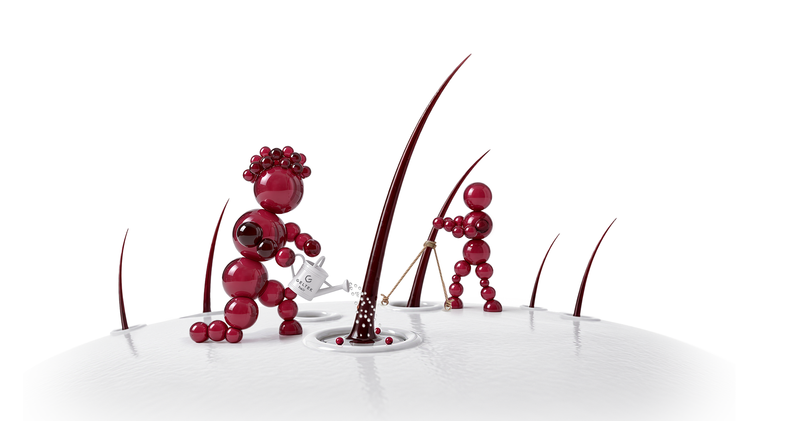
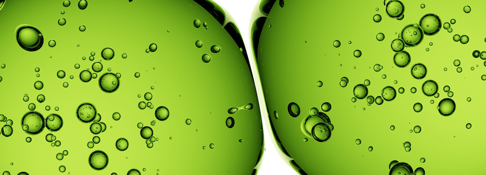
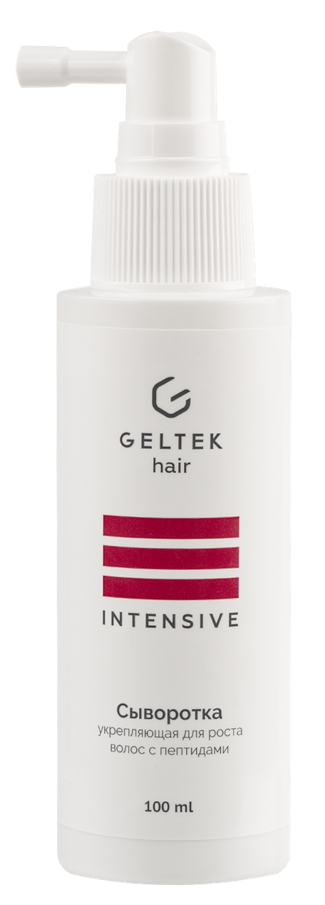
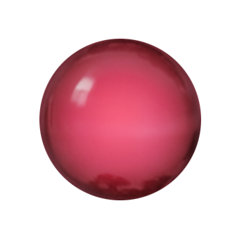
Для улучшения роста
и против выпадения волос
Ингредиенты в высокой концентрации
Комплексный подход к борьбе
с поредением волос
Доказанная эффективность
в клиническом исследовании*
GELTEK HAIR. Сыворотка укрепляющая для роста волос
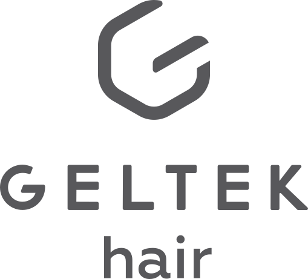
Женщинам
рекомендуем использовать сыворотку при выпадении и истончении волос
Мужчинам
при возрастном поредении и выпадении волос
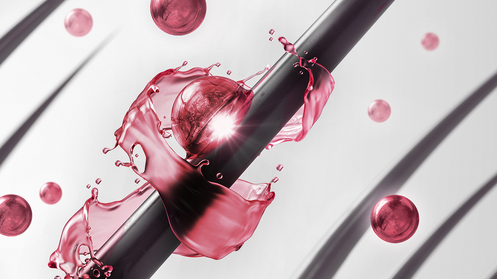
Бережный уход
при себорее, псориазе, дерматозах и нарушении себорегуляции, если заболевания приводят к выпадению волос
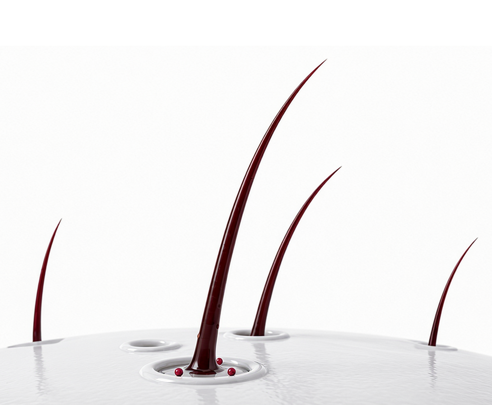
Как действует сыворотка
Пептидный комплекс
Уменьшает выпадение волос и продлевает фазу активного роста волоса
Стимулирует рост волос за счет улучшения кровотока в коже
Растительные компоненты усиливают
действие пептидного комплекса
Экстракты периллы плодоносящей и хауттюйнии сердцевидной оказывают противовоспалительный эффект
Экстракт зелёного чая в роли антиоксиданта предотвращает образование перхоти
Экстракт цветков клевера и олеаноловая кислота уменьшают воздействие андрогенов на волосяные фолликулы
Ниацинамид улучшает микроциркуляцию и дает себорегулирующий эффект
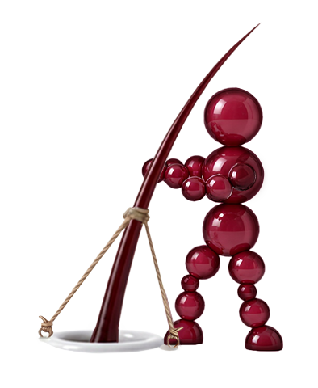
Где купить сыворотку GELTEK HAIR
Золотое Яблоко OZON
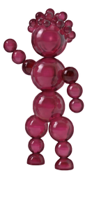
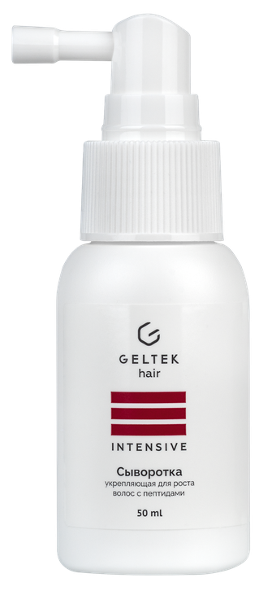
50 ml 100 mlУлучшает качество волос.
Эффективность доказана*
в клиническом исследовании
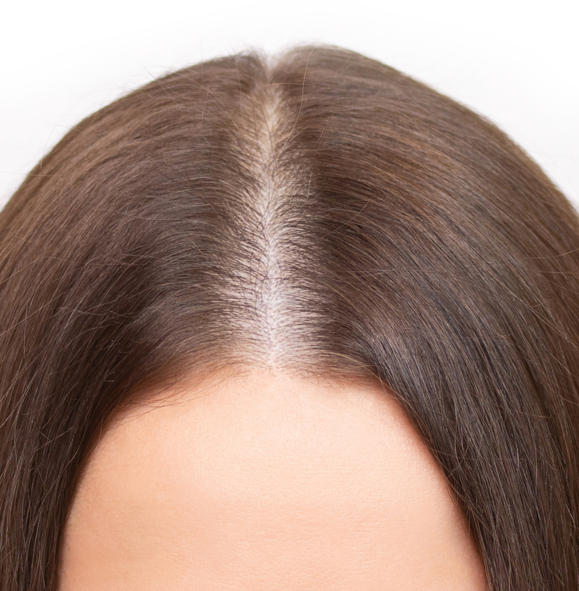
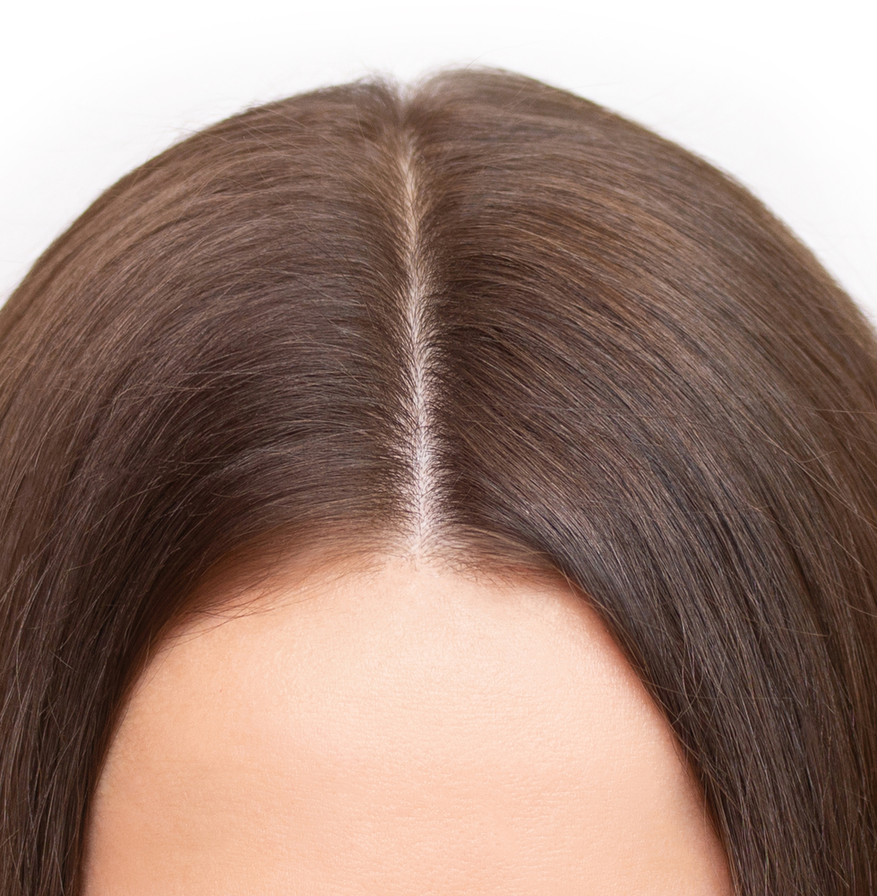
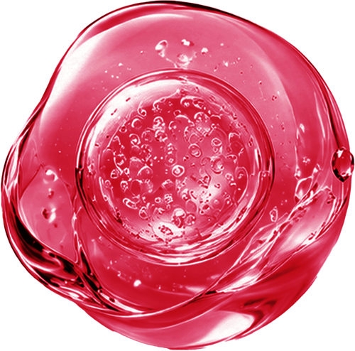
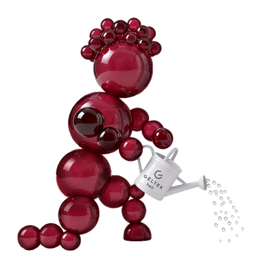
*Скачать исследованиеДоверие к GELTEK
Это российский производитель профессиональной и уходовой косметики с 30-летней историей. Начав с производства медицинского геля, GELTEK превратилась в крупную компанию с несколькими производствами в России, собственной лабораторией, клиникой эстетической медицины, центрами диагностики кожи в разных городах и широким ассортиментом продуктов. Производство соответствует строгим стандартам GMP, а качество продукции гарантируется постоянным внутренним и внешним контролем на всех этапах.
О компании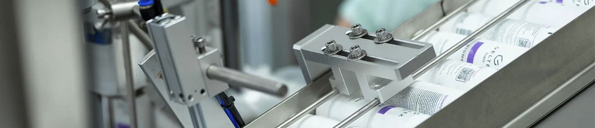
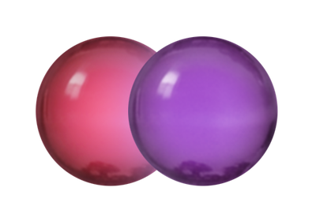
Окружите волосы
полной заботой
Шампунь нормализующий
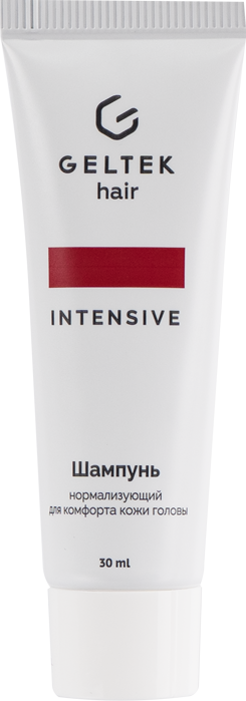
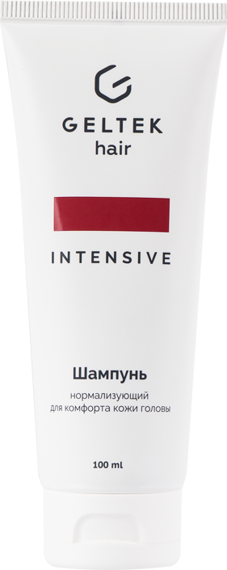
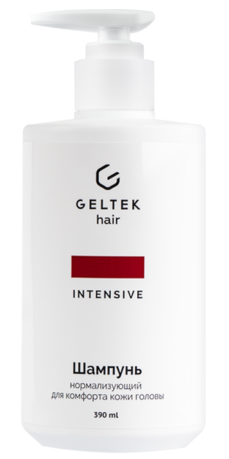
30 ml 100 ml 390 ml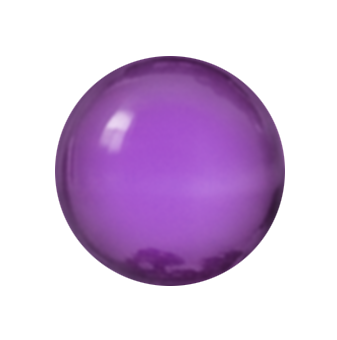
Шампунь укрепляющий с постбиотиками
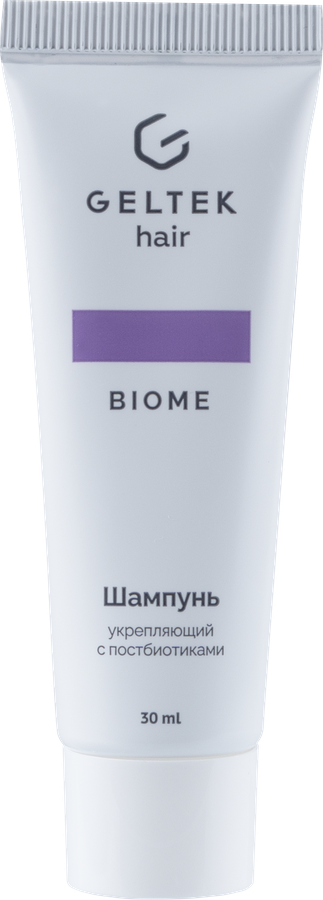
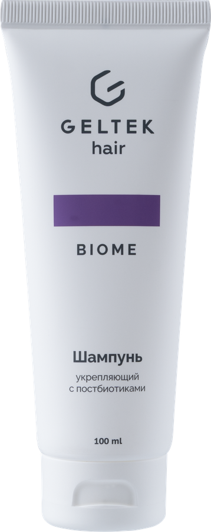
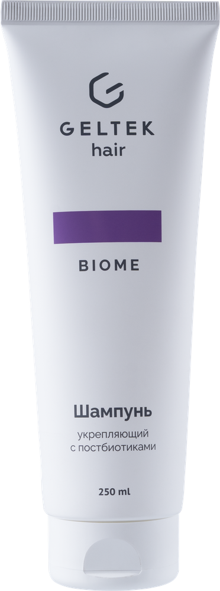
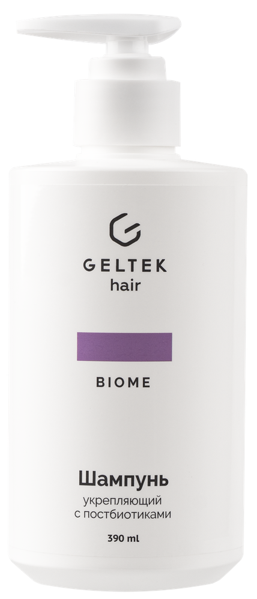
30 ml 100 ml 250 ml 390 ml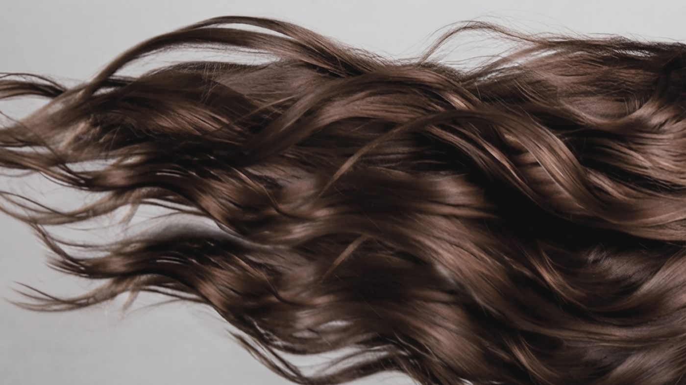
Для крепких
и густых волос!
Сыворотка и шампуни GELTEK HAIR идеальны для регулярного применения
Отсутствуют противопоказания при беременности и грудном вскармливании